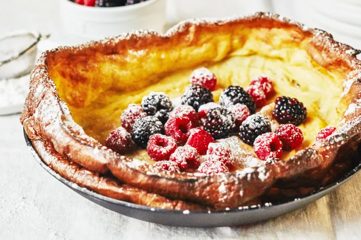

Dutch Baby Pancake

This is a big pancake!
Ingredients:
- 1/3 cup flour
- 1/2 cup milk
- 2 large eggs
- 2 TBSP sugar
- 1 tsp vanilla
- 1/2 tsp salt
- powdered sugar, maple syrup, or jam for serving
Steps:
- In a mixing bowl, blend the flour, milk, eggs, sugar, vanilla, and salt.
- Rest the batter for 20-25 minutes.
- Place a 9-10 inch cast iron pan on the middle rack of the oven. Heat the oven to 425 degrees.
- Melt the butter in the hot pan.
- Pour the batter on top of the butter. Place the skillet in the oven.
- Bake 15 to 20 minutes until lightly brown.
- Dust with powdered sugar. Cut into wedges and serve with maple syrup or jam.
- For fruit-filled Dutch baby: Arrange blueberries, raspberries, or sliced peaches over the bottom of the pan and pour batter on top.